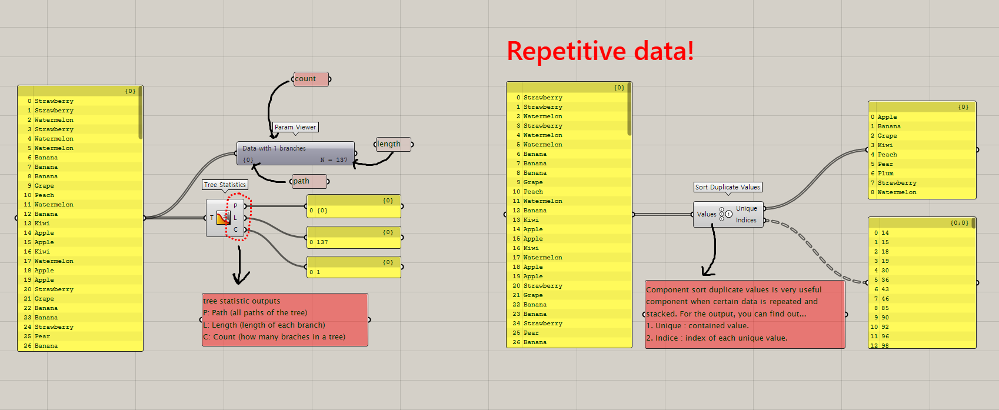
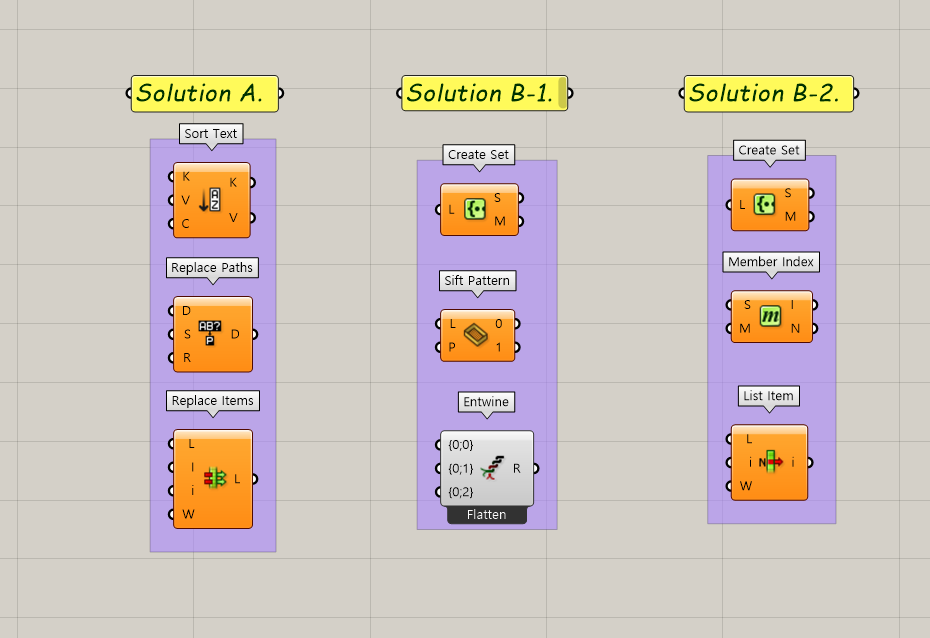
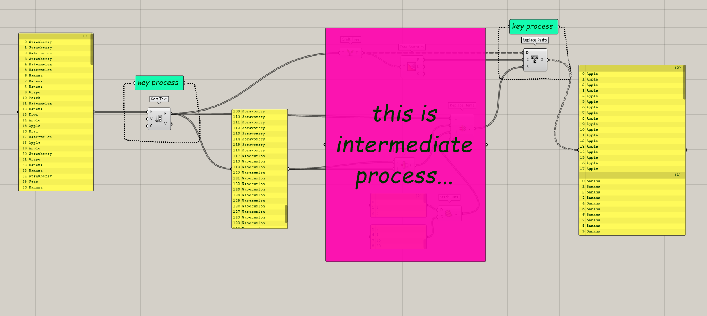
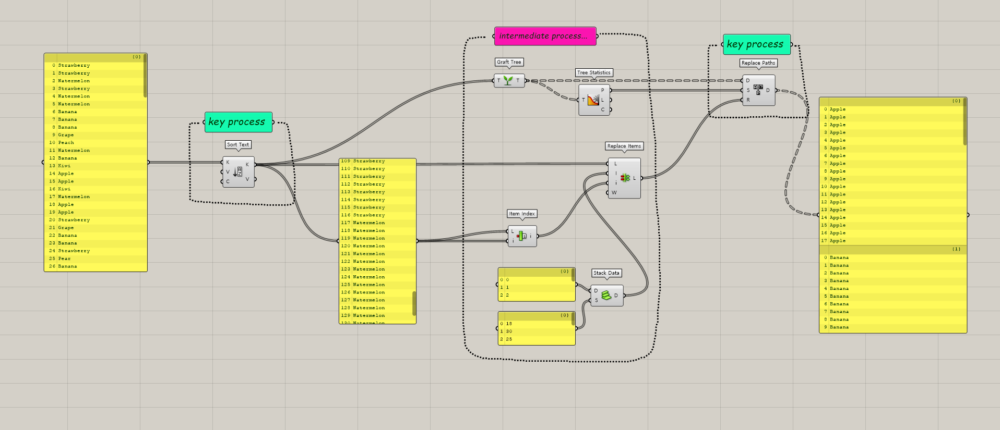
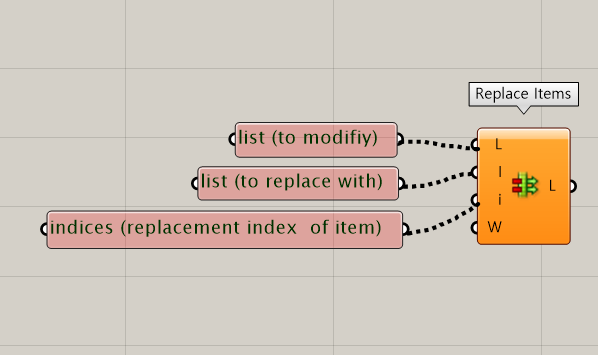

Strawberry quiz - Solution A
For today's article, we are going through some fun quiz, which is called, "The straberry quiz"

Quiz summary
We have a list, which contains bunch of fruit items in it. We have total 9 types of fruits and the number of each fruits are all different. The list is heavily massed up, so imagine you want to sort this list in each types of fruits, and also you want to make individual branch for type. In this case what is your solution?
To summarise the quiz,
1. Sort a list based on the fruit type.
2. Make a branch for sorted fruit type.
Data Analysis
Before starting script, we always carefully examine our data. The typical components used in examine data are Tree Statistics and Param Viewer. Let's take a look for the image below.

On the left side, you can also find another component which is "Sort duplicate values" this component is very useful and give a lot of information especially data is very repetitive just like this. Let's briefly take a look for it. When you put in data, for the output it shows repeated values and index of each values. For example path {0.0} shows index of only and every apples.
However using analysed information we will now go through how to sort and group this data.

In this article, we will cover three solutions, and upper image shows key components that we are using. Solution A starts with sort text to replace items and finally replace text. Solution B starts with create set but grouping method is different. B-1 uses shift pattern and entwine while B-2 uses member index and list item. In A-B1-B2 order, I personnally think it is more clean and clear solution. Let's start with solution A.
Solution A

Always be sure to clearly identify key process. Our key process is to sort fruits by their type and to group them in branch. For solution A, to achieve this key process two components were used. First, text sort component, second replace paths component. As you can see in the above image, text sort funtions to sort text by a-b-c, and replace paths as mentioned in earlier article, it changes paths of cetain existing paths. For the ellaborated description, check Component review : Replace Paths.


For this intermediate process it's quite complex and it requires labour. As we have to make replacement list to replace paths, we need several steps.
Firstly let's tale a look closer for the replace items component. It requires three input, which is respectively list (to modify), list (to replace with), replacement indices of item.
In this script as a result, stacked numbers of data will work as quide for replace paths.
The point we made list of number (process of replace items) is replace r input for replace paths doesn't works for text lists. However, making such number list is not that simple and clear way to sort data.
We will cover another way to sort and group this data. The article will be continued to Strawberry quiz - Solution B.